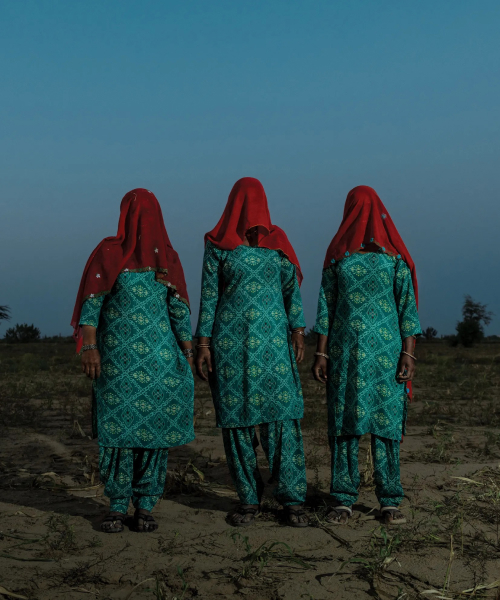
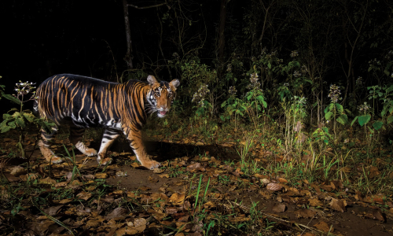

본문콘텐츠영역
HISTORY
-
HISTORY
National Geographic History is a magazine published by the National Geographic Society that explores the fascinating stories of world history, archaeology, and cultural heritage. Known for its in-depth analysis and visually stunning presentation, the magazine appeals to history enthusiasts and general readers alike.
Get the big story of the day, and explore the past and our place in the modern world. History comes alive with every issue. Unveiling the stories that shaped our world.
Lead more -
Articles provide detailed narratives of historical figures, events, and milestones. Highlights archaeological discoveries and the exploration of significant historical sites. Features articles on global initiatives to protect and restore endangered landmarks. Renowned for its use of high-quality photographs, illustrations, and infographics to complement the narratives.
The magazine combines expert journalism with visually stunning photography and illustrations, maintaining National Geographic's reputation for high-quality content. It appeals to readers who are passionate about history, archaeology, and cultural studies.
ANIMALS
-
Largetooth sawfish
-
prominent section of National Geographic's content, dedicated to exploring the diverse and fascinating world of wildlife. It serves as a hub for education, conservation awareness, and awe-inspiring storytelling about animals and their ecosystems. Detailed articles about a wide range of species, from iconic creatures like lions and elephants to lesser-known species such as pangolins and axolotls.
Lead more -
Seal
-
Killer whale
-
Gorilla
-
Dog
-
Manatees
-
Penguin
-
Polar bear
-
Eagles
-
Giraffe
-
Buffalo
ENVIRONMENT
Lead more-

- The world's glaciers are melting faster than we thought, new research shows
- Glaciers have survived through a delicate balance of gain and loss. A new study shows just how much the scale has tipped.
-

- The world's plastic pollution crisis, explained
- Much of the planet is swimming in discarded plastic, which is harming animal and possibly human health. Can it be cleaned up?
-
- Is tap water safe to drink? Here's what you really need to know.
- Experts weigh in on the chemicals that can be found in drinking water, how it's regulated, and what you can do if you're worried about your water.
-
- Wildfire season is getting longer—and more intense. Here's how to prepare.
- The impacts of these blazes can increasingly be felt hundreds of miles away. Here are some ways to protect yourself from dangerous smoke.
We support a diverse, international community of changemakers — National Geographic Explorers — who use the power of science, exploration, education, and storytelling to illuminate and protect the wonder of our world.
-
- Are we approaching the scientific limit to a hurricane's power?
- Historically, it's rare for a storm to exceed 200mph—but early research suggests it might not be so uncommon in the near future.
-
- Millions depend on the Mississippi—but the mighty river is running dry
- Tons of grains and crops are shipped down the Mississippi River every year. What will happen if increasingly persistent droughts shrink America's longest river?
-
- The world's historic sites face climate change. Can Petra lead the way?
- The 2,000-year-old desert city created an adventurous backdrop for Indiana Jones, but today, drought, floods, and sandstorms imperil it. Ancient technology could be the key to surviving.
-
- How a wild river became a national park—and sparked a movement
- What will it take the save the world's rivers? Experts say we need only look to the Vjosa River in Albania for a model of conservation.
SCIENCE
-
The Geminids meteor shower peaks this week—here's what causes them
-
This is why Lucy has been the face of human evolution for the last 50 years.
-
There are actually 4 types of pneumonia. These are the differences.
-
Europa is an icy ocean world—and NASA is finally going to explore it.
-
SCIENCE
core focus of National Geographic's mission, offering engaging content that covers groundbreaking discoveries, scientific exploration, and the latest advancements across various disciplines. It serves as a platform for understanding our world and beyond, emphasizing education and inspiration.
Lead more -
9 must-see night sky events to look forward to in 2025 A partial solar eclipse. Numerous eye-catching planetary get-togethers. Saturn's rings perform a vanishing act. In the upcoming year, stargazers can anticipate an array of celestial wonders to get excited for.
The best of National Geographic delivered to your inbox
GALLERY
- 
-
showcases the awe-inspiring visual storytelling that National Geographic is renowned for. This gallery features curated collections of photographs, artworks, and multimedia content that capture the beauty, diversity, and wonder of the natural world and human experiences.
Lead more -
National Geographic is a globally renowned media organization known for its focus on science, exploration, education, and storytelling. Founded in 1888, it is managed by the National Geographic Society, a nonprofit organization dedicated to advancing knowledge about the planet and its cultures.
National Geographic - 